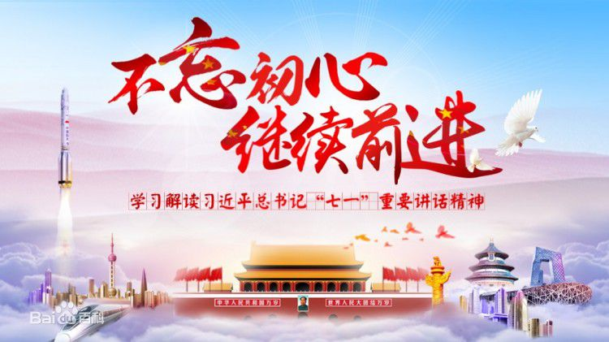

经济建设取得重大成就。
全面深化改革取得重大突破。
民主法治建设迈出重大步伐。
思想文化建设取得重大进展。
人民生活不断改善。
生态文明建设成效显著。
生态文明建设成效显著。
港澳台工作取得新进展。
全方位外交布局深入展开。
全面从严治党成效卓著。
1、中国共产党人的初心和使命，就是为中国人民谋幸福，为中华民族谋复兴。
2、中国特色社会主义进入了新时代。
3、中华民族迎来了从站起来、富起来到强起来的伟大飞跃。
4、我国社会主要矛盾已经转化为人民日益增长的美好生活需要和不平衡不充分的发展之间的矛盾。
5、中华民族伟大复兴，绝不是轻轻松松、敲锣打鼓就能实现的。
6、把人民对美好生活的向往作为奋斗目标，依靠人民创造历史伟业。
7、乘势而上开启全面建设社会主义现代化国家新征程，向第二个百年奋斗目标进军。
8、中华民族将以更加昂扬的姿态屹立于世界民族之林。
9、中国开放的大门不会关闭，只会越开越大。
10、有事好商量，众人的事情由众人商量，是人民民主的真谛。
